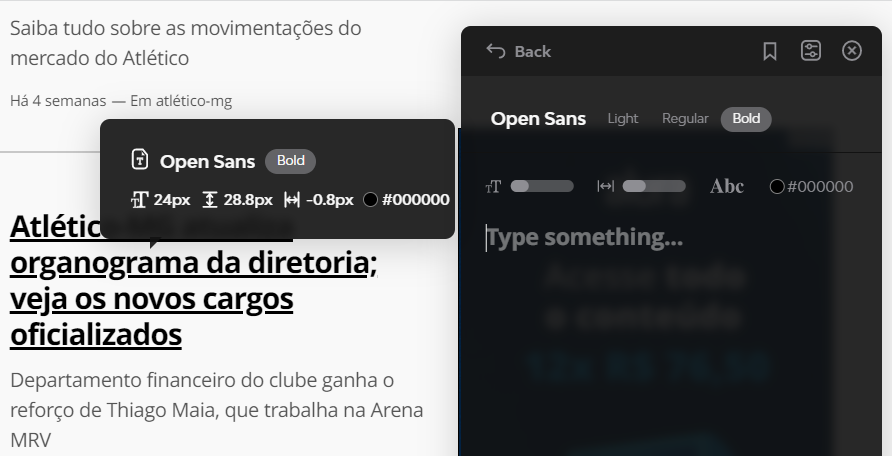

Para visualizarmos fontes que outros sites estão utilizando, entramos no site do Chrome Web Store e baixamos a extensão do Fonts Ninja, depois ao ativa-lá em nosso navegados, só clicarmos na extensão e passar sobre a fonte do site em específico e ao canto direito ele vai mostrar a fonte utilizada, conforme no exemplo abaixo.
